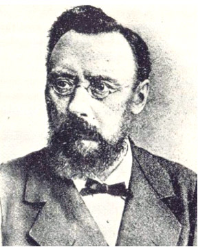

|  |
Horner's syndrome = A syndrome mainly characterised by a trias
of miosis, ptosis, and enophthalmos.
Johann Friedrich Horner's father was a physician and his mother was a talented linguist, from whom he learned several languages. Horner received his schooling in Zurich, and following a period of compulsory military service, he commenced the study of medicine in Zurich in 1849 under Karl Ewald Hasse (1810-1902) and Ernst Hasse. He obtained his doctorate in 1854 with a highly praised thesis on the subject of spinal curvature.
Following graduation he went abroad, as was usual at the time. He came to Vienna, where he became familiar with several specialities, among them the diseases of the eye. Eduard Jaeger Ritter von Jaxtthal (1818-1884) taught him the use of the ophthalmoscope, which had been invented a few years earlier by Hermann Helmholtz (1821-1894). Through Eduard Jæger he came into contact with the famous Albrecht von Graefe in Berlin, to whom Horner became assistant. He there decided to become an ophthalmologist, and to him von Albrecht von Graefe (1828-1870) became an example as physician, teacher, and scientist - and at the same time being a good friend.
Following a visit to Paris as the assistant to Louis-Auguste Desmarres, (1810-1882), a very competent eye surgeon, he investigated the role of retinoscopy in the diagnosis of systemic diseases. Horner in 1856 returned to his native city of Zurich, where he was habilitated and associated to the university ophthalmological clinic, then a part of the department of surgery. The eye clinic soon became independent, however, and was built up by Horner, who became its director and in 1862 was appointed professor extraordinary. Parallel to his educational duties he carried on a busy private practice, attracting patients from near an far. His total number of patients treated has been estimated to be some 100.000. He was appointed full professor of ophthalmology in 1873.
Horner was loved as a physcian caring about his patients, for whom he had an impressive memory of persons. He took advantage of the great experience gained from his private practice when teaching. He was highly appreciated as a clinical teacher with a great talent for rhetoric's. His many-sided presentation with the patients in the midst - where diseases of the eye were related to other disorders of the body - mirrored his own broad knowledge. He was a competent surgeon who carried out some 2 000 catarcts/glaucomas - with a progrediating decline in complications as he was the first to introduce antiseptical methods in the treatment of eye diseases. Horner published some 40 papers illustrating his interests in the various diseases of the eye. He left many of his observations to his students for publication in no less than 28 doctoral dissertations.
Besides being an important physician, Horner was also a great organiser. He founded his own ophthalmological clinic, Hottinghof, and contributed to the establishment of a children's hospital by his planning and fund collecting. Her worked on the question of school hygiene and introduced regular examinations of the eyes of schoolchildren. In 1867 he was one of the driving forces fighting the epidemic of cholera.
Horner took the initiative for the founding of the Kanton Zürich County Society of Physicians, in which he himself was actively engaged. At the faculty he was entrusted with elucidations resulting in changes of curriculum for students of medicine. In his own specialty he set the standards for passing the examination. Horner was also elected to the city council.
Understandably Horner's work occupied much of his time and took its toll on his health. Because of a heart and kidney disorder he resigned his professorship in 1885 and died of a stroke the following year, at the age of only 55.
Horner maintained an extensive correspondence with friends at home and aboard. These letters were published in the 1930's by Alfred Bader, a Basel ophthalmologist. The collection of letters received by Horner himself were answered by his son, who was also a physician. At his death in 1943 the collection, along with other of Horner's possessions, were given to the eye clinic in Zurich. Since 1975 the collection of "Horneriana" is to be found in the museum of medical history in Zurich. This institution in 1980 published a treatise entitled Friedrich Horner, 1831-1886, Leben und Werk.
In 1876 he established that a man with a red-green colour blindness transmitted this anomaly to his male grandchildren through his daughter who was not colour blind, similar to haemophilia, i.e. sex linked transmission.
Bibliography:
Articles in [Zehender’s] Klinische Monatsblatt für Augenheilkunde.
This journal was published, in various periods, in Erlangen, Stuttgart
(1863-1899?), Rostock and Kasssel. Now in Stuttgart.
Other publications:
Obituaries: